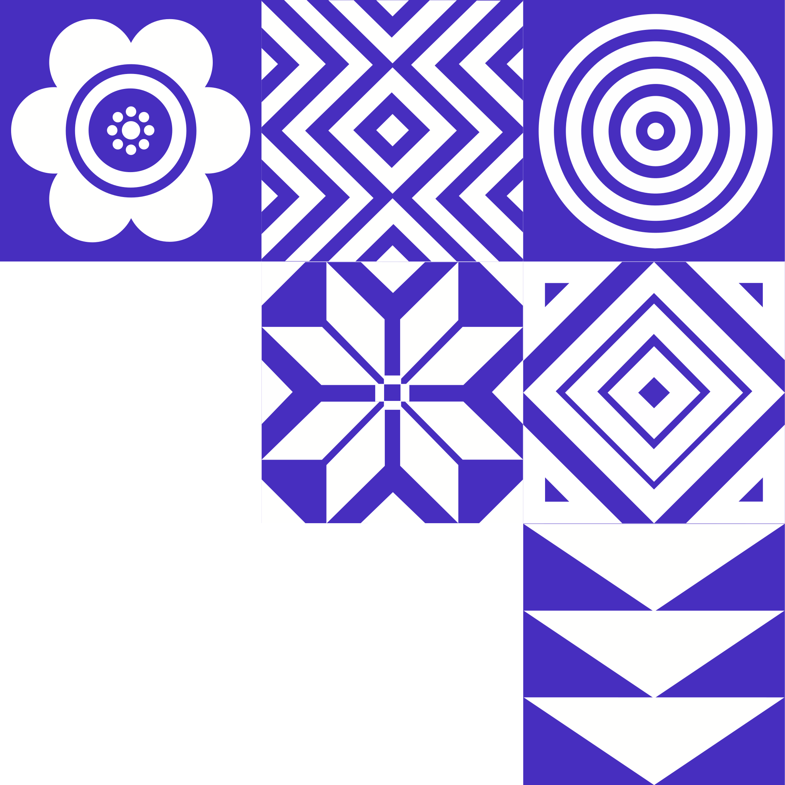
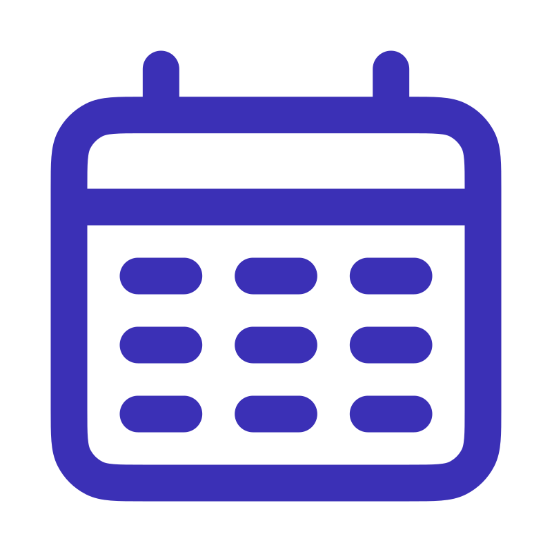
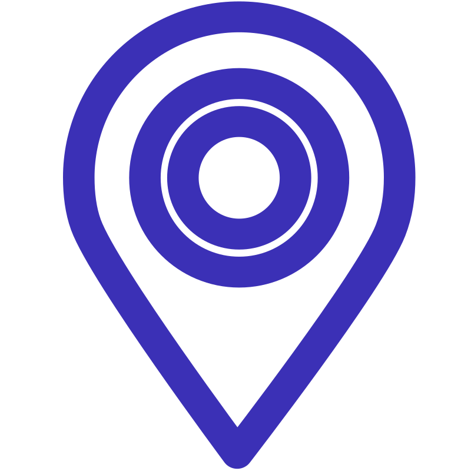

About the course
4 evenings, 2 countries, 1 real problem
What you will do
Crosslab is a free evening course that runs for one month. You join a small team at your own university and get paired with a buddy group in the other country. Your team design a solution to a real problem in the other country, under a shared theme.
The course follows human-centered design. You cannot guess what people in the other country, so instead you get the chance to ask them. Your buddy group will provide you with information, react to your ideas and give feedback on your prototype.
Sessions are hands-on in the makerspaces, FUSE at Chalmers and UniPod at the Univeristy Of Rwanda, linked online so both sides can work together.
- Duration
- 4 weeks
- Sessions
- 1 evening/week, 17:00 to 20:00
- Location
- FUSE (Chalmers) and UniPod (UR)
- Cost
- Free



What you gain
-
1
Design across cultures
Practice designing for users whose context differs from yours.
-
2
Human-centered design
Interviews, problem framing, prototyping, et.c
-
3
International network
Make friends in another country
-
4
Building stuff
Hands-on time with tools at Fuse or UniPod
-
5
CV
Good on CV